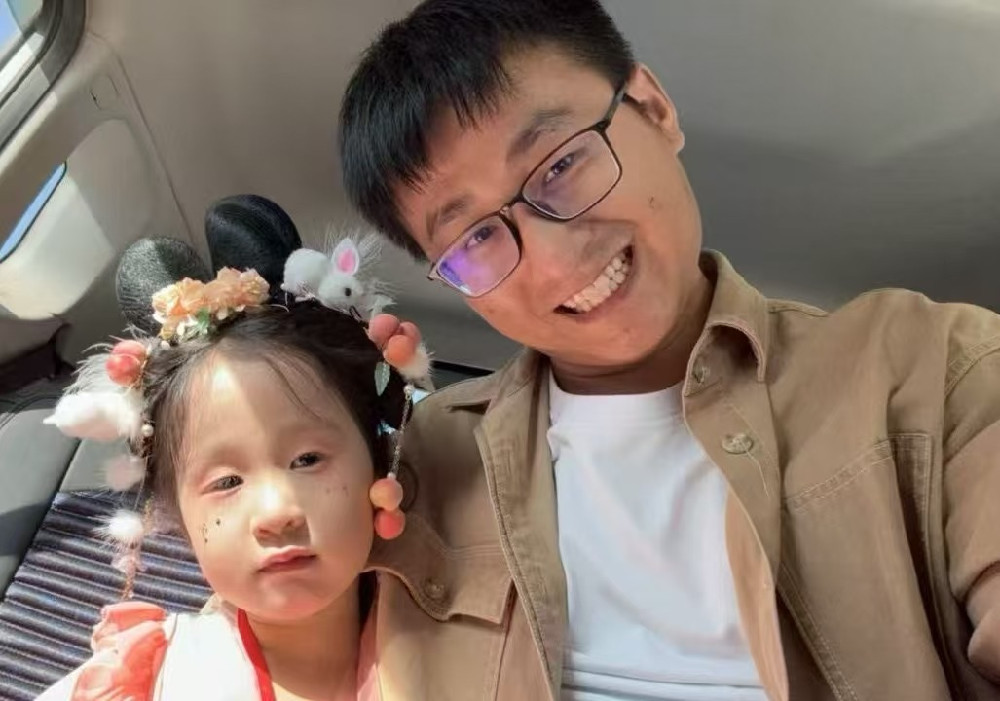

|  |
Zhaoyan Shen 申兆岩 Ph.D., Professor
| School of Computer Science and Technology, Shandong University |
| Computer Architecture & Embedded System Research Center |
Homepage: https://zyshen00.git.io/
Email: shenzhaoyan@sdu.edu.cn
Address: Room 414-4, N3 Building, No. 72, Binhai Road, Jimo District, Qingdao, Shandong, 266200, China
|

|
Bio
Zhaoyan Shen received the B.E. and M.E. degrees in Computer Science and Technology from Shandong University in 2012 and 2015 respectively. Zhaoyan Shen received the Ph.D. degree in Computer Science from the Hong Kong Polytechnic University in 2018. He joined the Department of Computer Science and Technology in Shandong University in 2018, where he is currently an Professor. He is the recipient of the Young Scholars Future Program of Shandong University in 2019. His current research areas are computer architecture, big data storage architecture, new non volatile memory, intelligent cloud gateway, and blockchain storage. His research works have been published in top academic conferences, such as USENIX Conference on File and Storage Technologies (FAST), International Conference on Data Engineering (ICDE), Design Automation Conference (DAC) International Conference on Distributed Computing Systems (ICDCS), IEEE/ACM International Conference on Comput er Aided Design (ICCAD), etc., and published in top journals, such as ACM Transactions on storage (TOS), IEEE Transactions on computer aided design of Integrated Circuits and Systems (TCAD), ACM Transactions on Embedded Computing Systems (TECS), etc. He has served as a reviewer for the journals: IEEE Transactions on Computer (TC), IEEE Transactions on computer aided design of Integrated Circuits and Systems (TCAD), ACM Transactions on Embedded Computing Systems (TECS), Journal of Systems Architecture (JSA).
Recent News
- PhD student Wei Qian has received support from the NSFC for the Young Scholar Basic Research Program (PhD level). Congratulations to Wei Qian!
- "HaSiS: A Hardware-assisted Single-index Store for Hybrid Transactional and Analytical Processing" got accepted in FAST 2025 (CCF-A)
- "HiDPU: A DPU-Oriented Hybrid Indexing Scheme for Disaggregated Storage Systems" got accepted in FAST 2025 (CCF-A)
- "A Deep Dive into Protocol Design: How to Improve IPFS Performance Without Sacrificing Decentralization" got accepted in ICDE 2025 (CCF-A)
- "ASHL: An Adaptive Multi-stage Distributed Deep Learning Training Scheme for Heterogeneous Environments" got accepted in IEEE TC (CCF-A)
- "Breathing New Life into An Old Tree: Resolving Logging Dilemma of B+-tree on Modern Computational Storage Drives" got accepted in PVLDB 2024 (CCF-A)
- "ChainKV: A Semantics-Aware Key-Value Store for Ethereum" got accepted in SIGMOD 2024 (CCF-A)
Studying & Working Experience
- Shandong University， Professor (2023.09 - now)
- Shandong University，Associate Professor (2020.09 - 2023.08)
- Shandong University，Assistant Professor (2018.08 - 2020.08)
- The HongKong Polytechnic University, Computing, PhD (2015.09 - 2018.08)
Publications
DBLP: https://dblp.org/pers/s/Shen:Zhaoyan.html
Conference Papers
-
Wenbin Zhu, Zhaoyan Shen*, Qian Wei, Renhai Chen, Xin Yao, Dongxiao Yu, Zili Shao,
HiDPU: A DPU-Oriented Hybrid Indexing Scheme for Disaggregated Storage Systems, in 23th USENIX Conference on File and Storage Technologies (FAST), Santa Clara, CA, USA, February 25 - 27, 2025 (CCF-A)
-
Kecheng Huang, Zhaoyan Shen*, Zili Shao, Feng Chen, Tong Zhang,
HaSiS: A Hardware-assisted Single-index Store for Hybrid Transactional and Analytical Processing, in 23th USENIX Conference on File and Storage Technologies (FAST), Santa Clara, CA, USA, February 25 - 27, 2025 (CCF-A)
-
Wenbin Zhu, Zhaoyan Shen*, Mengying Zhao, Dongxiao Yu, Bingzhe Li
A Deep Dive into Protocol Design: How to Improve IPFS Performance Without Sacrificing Decentralization, in the 41th IEEE International Conference on Data Engineering (ICDE), Hongkong, China, May 19 - 23, 2025 (CCF-A)
-
Kecheng Huang, Zhaoyan Shen*, Zili Shao, Tong Zhang and Feng Chen,
Breathing New Life into An Old Tree: Resolving Logging Dilemma of B+-tree on Modern Computational Storage Drives, International Conference on Very Large Databases (VLDB 2024), Guangzhou, China, August 25-29, 2024.
-
Zehao Chen, Bingzhe Li, Xiaojun Cai, Zhiping Jia, Lei Ju, Zili Shao, Zhaoyan Shen*:
ChainKV: A Semantics-Aware Key-Value Store for Ethereum, in 2024 ACM SIGMOD/PODS Conference, Santiago, Chile, June 9 - June 15, CCF-A (SourceCode)
-
Qian Wei, Yi Li, Zhiping Jia, Mengying Zhao, Zhaoyan Shen *, Bingzhe Li:
Reinforcement Learning-Assisted Management for Convertible SSDs, in the 60th Design Automation Conference (DAC), San Francisco, CA, June 9 - 13, (2023), CCF-A
-
Kecheng Huang, Zhaoyan Shen *, Zhiping Jia, Zili Shao, Feng Chen:
Removing Double-Logging with Passive Data Persistence in LSM-tree based Relational Databases, in 20th USENIX Conference on File and Storage Technologies (FAST), Santa Clara, CA, USA, February 22 - 24, (SourceCode), (2022), CCF-A
-
Kecheng Huang, Zhiping Jia Zhaoyan Shen *, Zili Shao, Feng Chen:
Less is More: De-amplifying I/Os for Key-value Stores with a Log-assisted LSM-tree, in the 37th IEEE International Conference on Data Engineering (ICDE), (SourceCode), (2021), CCF-A
-
Yungang Pan, Zhiping Jia, Zhaoyan Shen *, Bingzhe Li, Wanli Chang, Zili Shao:
Reinforcement Learning-Assisted Cache Cleaning to Mitigate Long-Tail Latency in DM-SMR, in the 57th Design Automation Conference (DAC), San Francisco, CA, December 5 - 9, (SourceCode), (2021), CCF-A
-
Yuhao Zhang, Zhiping Jia, Yungang Pan, Hongchao Du, Zhaoyan Shen *, Mengying Zhao, Zili Shao:
PattPIM: A Practical ReRAM-Based DNN Accelerator by Reusing Weight Pattern Repetitions, in the 57th Design Automation Conference (DAC), San Francisco, CA, July 19-23 (2020), CCF-A
-
Zhaoyan Shen , Feng Chen, Yichen Jia, Zili Shao:
DIDACache: A Deep Integration of Device and Application for Flash Based Key-Value Caching, in 15th USENIX Conference on File and Storage Technologies (FAST), Santa Clara, CA, USA, February 27 - March 2, (2017)
Journal Papers
-
Tianyu Wang, Zizhan Chen, Wenbin Zhu, Qian Wei, Zhaoyan Shen*, Zili Shao:
A Bloom-filter-based Unique Address Checking Approach for DAG-based Blockchain Systems. IEEE Transactions on CAD of Integrated Circuits and Systems (TCAD), Accepted (2023)， CCF-A
-
Zhaoyan Shen, Yuhan Yang, Yungang Pan, Yuhao Zhang, Zhiping Jia, Xiaojun Cai, Bingzhe Li, Zili Shao:
A Multi-Agent Reinforcement Learning-Assisted Cache Cleaning Scheme for DM-SMR. IEEE Transactions on CAD of Integrated Circuits and Systems (TCAD), Accepted (2022)， CCF-A
-
Qian Wei, Bingzhe Li, Wanli Chang, Zhiping Jia, Zhaoyan Shen*, Zili Shao:
A Survey of Blockchain Data Management Systems, accepted in ACM Transactions on Embedded Computing Systems (TECS), (2021), CCF-B
-
Zhaoyan Shen, Feng Chen, Gala Yadgar, Zhiping Jia, Zili Shao:
Prism-SSD: A Flexible Storage Interface for SSDs. IEEE Transactions on CAD of Integrated Circuits and Systems (TCAD), Accepted (2021)， CCF-A
-
Yuhao Zhang, Zhiping Jia, Hongchao Du, Runzhen Xue, Zhaoyan Shen *, Zili Shao:
A Practical Highly Paralleled ReRAM-based DNN Accelerator by Reusing Weight Pattern Repetitions. IEEE Transactions on CAD of Integrated Circuits and Systems (TCAD), Accepted (2021)， CCF-A
-
Zhaoyan Shen, Han Lei, Chenlin Ma, Zhiping Jia, Zili Shao:
Leveraging the Interplay of RAID and SSD for Lifetime Optimization of Flash-based SSD RAID. IEEE Transactions on CAD of Integrated Circuits and Systems (TCAD), Accepted (2020)， CCF-A
-
Qian Wang, Zhiping Jia, Tianyu Wang, Zhaoyan Shen*, Mengying Zhao, Renhai Chen, Zili Shao:
A Highly Parallelized PIM-based Accelerator for Transaction-based Blockchain in IOT Environment. IEEE Internet of Things Journal (IOT), Accepted (2020)，JCR Q1
-
Zhaoyan Shen, Han Lei, Renhai Chen, Chenlin Ma, Zhiping Jia, Zili Shao:
An Efficient Directory Entry Lookup Cache with Prefix-Awareness for Mobile Devices. IEEE Transactions on CAD of Integrated Circuits and Systems (TCAD), Accepted (2020)， CCF-A
-
Zhaoyan Shen, Yuanjing Shi, Zili Shao, Yong Guan:
An Efficient LSM-tree-based SQLite-like Database Engine for Mobile Devices, IEEE Transactions on CAD of Integrated Circuits and Systems (TCAD), 38(9) (2019), CCF-A
-
Zhaoyan Shen, Feng Chen, Yichen Jia, Zili Shao:
DIDACache: An Integration of Device and Application for Flash-based Key-value Caching, ACM Transactions on Storage (TOS), 14(3) (2019), CCF-A
-
Zhaoyan Shen,Zhijian He, Shuai Li, Qixin Wang, Zili Shao, A Multi-Quadcopter Cooperative Cyber-Physical System for Timely Air Pollution Localization, ACM Transactions on Embedded Computing Systems (TECS), 16(3), 2017, CCF-B
* Correesponding Author